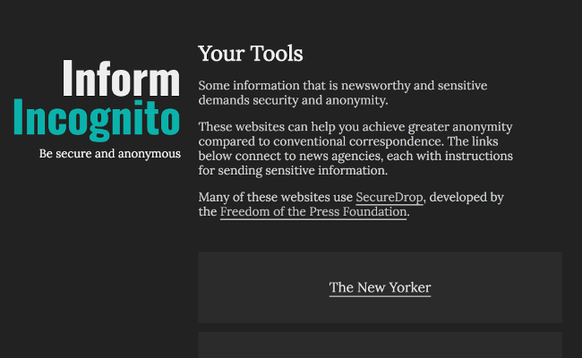
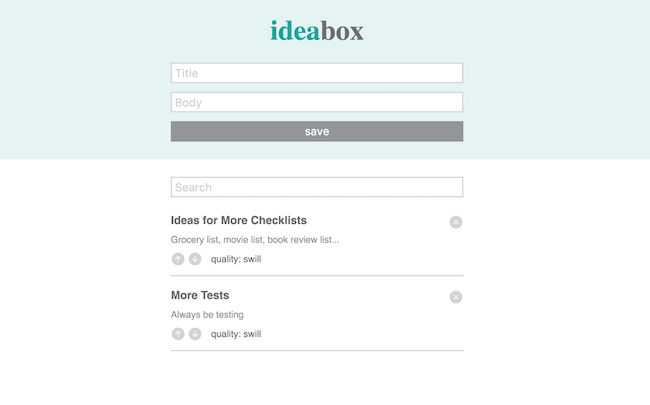

about
I'm a web developer and currently an instructor at the Turing School of Software and Design
in Denver, CO. When I'm not writing code, I'm cooking, backpacking, and winter mountaineering.
work

I created this site to show a list of news agencies that provide a secure, anonymous way for anyone to send info.

I've heard that every site is just another content management system or a checklist, and this is the latter. I created this site to
solidify my knowledge of an Express backend API and server-side testing. You can see the source code here.
Lessons
Lessons that I have written for the Turing School of Software and Design:
Server-Side Testing
This lesson focuses on testing a back-end API using: Node/Express, Mocha, Chai, and Chai-http.
Typically, we use a knex/PostgreSQL database in applications, but this lesson removes
the added complexity of a database by using app.locals.
Turing Curriculum Prework
This material was designed to introduce incoming Turing students to programming, the terminal,
front-end development, and what life at the Turing School of Software and Design will be like.
blog
Some of my recent posts from my technical Medium blog:
Seed Knex PostgreSQL Database with JSON Data
How to seed multiple data files with a one-to-many relationship
jQuery Selectors — The Absolute Basics
Transitioning from vanilla JavaScript to the jQuery library